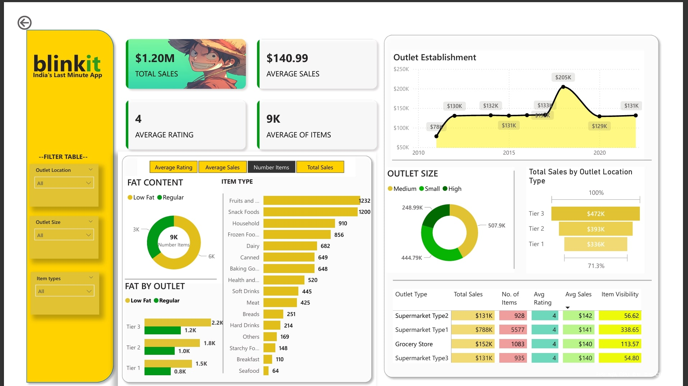
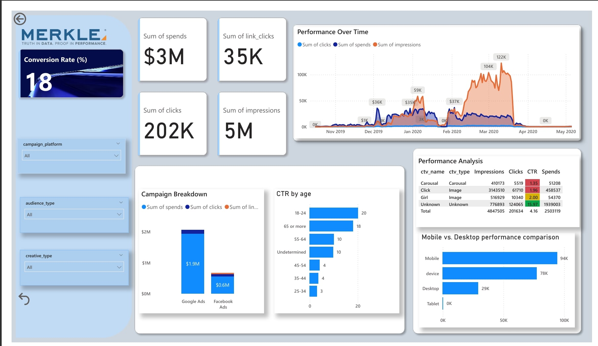

Blinit Sales analysis
A Power BI dashboard analyzing sales data, outlet performance, and product categories. Key insights include top-selling items, outlet sales trends, and customer preferences. Explore sales by tier, size, and product type to optimize business strategies. Includes datasets, reports, and scripts for deeper analysis

Blinkit Sales Analysis Dashboard
Project Overview
This project analyzes Blinkit’s sales data to uncover key trends in product performance, outlet sales, and customer preferences.
The goal is to optimize sales strategies by identifying high-performing product categories, outlet types, and sales trends over time.
Key Objectives
- Identify top-selling product categories and their impact on revenue
- Analyze sales performance across different outlet types and sizes
- Understand historical sales trends and peak performance periods
- Provide actionable insights to enhance business decisions
Tools & Technologies Used
- Power BI – For data visualization and interactive reporting
- Excel – For data preprocessing and aggregation
Key Metrics Analyzed
- Total Sales: $1.20M
- Average Rating: 4
- Top Item by Sales: Household items
- Top Item by Volume: Fruits & Vegetables
Sales Breakdown
Sales by Outlet Type
- Tier 1: $336K
- Tier 2: $393K
- Tier 3: $472K
Sales by Outlet Size
- High Size Outlets: $249K
- Medium Size Outlets: $508K
- Small Size Outlets: $445K
Product Category Sales
- Low-Fat Items: $776K
- Regular Items: $425K
Insights & Findings
- Tier 3 Outlets Lead Sales: Highest revenue at $472K, indicating strong demand in less urbanized areas.
- Medium-Sized Outlets Perform Best: They generated the highest sales at $508K.
- Healthier Choices Are Growing: Low-fat items significantly outsold regular items.
- 2018 Was a Peak Sales Year: Blinkit recorded its highest sales ($205K), requiring further trend analysis.
- Fruits & Vegetables Dominate: Sold in the largest quantity, while household items had the highest avg. sales.
Challenges & Solutions
- Sales Discrepancies: Addressed inconsistencies using Power BI transformations.
- Category Trends: Identified underperforming products to refine sales strategies.
- Outlet Performance: Suggested scaling medium-sized outlets for optimal revenue.
Results & Impact
- 🚀 Improved sales strategy by identifying high-revenue product categories
- 📊 Helped optimize outlet placement based on sales trends
- 💡 Provided data-driven insights for inventory planning
Project Deliverables
- ✅ Power BI Dashboard (.pbix) with interactive sales analysis
- ✅ Visual reports on sales trends, product performance, and outlet types
- ✅ Actionable recommendations for business growth
MERKLE ADS ANALYSIS
This Power BI dashboard analyzes creative performance across campaigns, providing insights into CTR, CR, Spends, Clicks & Impressions. It helps identify top-performing creatives & optimize engagement.

Merkle Ads Data Analysis
Project Overview
This project analyzes advertising data from Merkle to evaluate campaign performance, optimize ad spend, and improve Return on Investment (ROI).
The analysis includes key insights into impressions, clicks, conversions, and customer engagement across multiple ad platforms.
Key Objectives
- Identify high-performing ads and optimize budget allocation
- Analyze customer engagement trends and conversion rates
- Measure ad performance across different platforms
- Provide actionable insights for campaign improvement
Tools & Technologies Used
- Power BI – For data visualization and interactive reporting
- Excel – For initial data cleaning and aggregation
Key Metrics Analyzed
- Total Ad Spend: Amount spent on ads
- Total Impressions: Number of times an ad was displayed
- Click-Through Rate (CTR): Percentage of users who clicked the ad
- Conversion Rate: Percentage of clicks that led to a successful action
- Cost Per Click (CPC): Cost incurred per ad click
- Return on Ad Spend (ROAS): Revenue generated per dollar spent
Insights & Findings
- Optimized Budget Allocation: Identified platforms with better CTR and ROI for fund reallocation.
- Ad Performance by Platform: Some platforms drove higher engagement, while others had lower conversion rates.
- Customer Behavior Analysis: Found peak engagement hours and audience demographics.
- Cost Efficiency Improvements: Reduced CPC and improved ROAS through data-driven optimization.
Challenges & Solutions
- Data Cleaning: Addressed missing and inconsistent data using Power BI transformations.
- Performance Gaps: Identified underperforming ads and optimized them based on insights.
- Budget Constraints: Suggested reallocating funds to high-performing campaigns.
Results & Impact
- 🚀 Improved ad targeting & budget efficiency
- 📊 Increased CTR & conversion rates
- 💰 Reduced ad costs & improved ROI
Project Deliverables
- ✅ Power BI Dashboard (.pbix) with interactive reports
- ✅ Visual breakdown of ad performance metrics
- ✅ Recommendations for campaign improvement
Insignts of project
🌿 Medicinal Plant Classification using Deep Learning
A deep learning-based project that classifies different medicinal plants using leaf images. The model was trained using a Convolutional Neural Network (CNN) and achieves high accuracy on validation data. This project also includes a GUI application built with Tkinter, allowing users to upload leaf images and get instant predictions.
- Model Type: CNN (Convolutional Neural Network)
- Training Accuracy: 90.24%
- Validation Accuracy: 80.84%
- Technologies Used: Python, TensorFlow, Keras, OpenCV, Tkinter
- Features: GUI App for image classification, Image preprocessing with augmentation, High-performing model